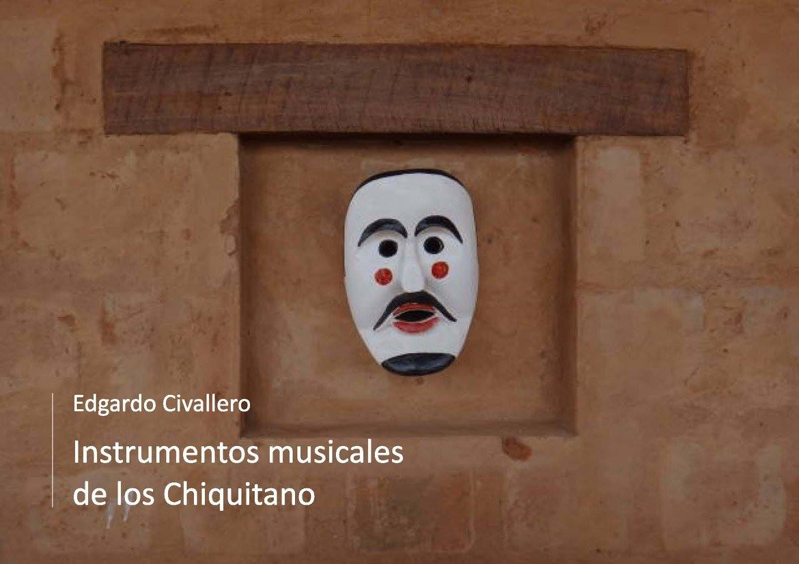

Instrumentos musicales de los Chiquitano
Inicio > Libros digitales sobre música. Serie 1 > Instrumentos musicales de los Chiquitano
Cómo citar este trabajo: Civallero, Edgardo (2025). Instrumentos musicales de los Chiquitano. Edición de archivo. Bogotá: El Zorro de Abajo Editora.
Descargar en PDF.
Este libro constituye un estudio monográfico sobre el sistema sonoro y organológico del pueblo Chiquitano, una de las sociedades indígenas más significativas de las tierras bajas orientales de Bolivia. Basado en fuentes históricas, testimonios etnográficos y trabajo de campo, el texto reconstruye con precisión la trayectoria, morfología y función cultural de los instrumentos musicales tradicionales de esta sociedad, mostrando la compleja síntesis entre herencias precoloniales, influencias misionales y procesos locales de reinvención sonora.
El estudio se abre con una contextualización histórica de los Chiquitano, asentados entre los departamentos de Santa Cruz y Beni y extendidos hacia el Mato Grosso brasileño. Se explica que esta identidad es el resultado de una amalgama de múltiples grupos —piñoca, paunaca, quitema y zamuco, entre otros— reunidos en las reducciones jesuíticas del siglo XVII. En ellas se produjo una intensa hibridación cultural, reflejada en la música. La crónica colonial menciona que la vida cotidiana estaba marcada por el sonido: al amanecer, al anochecer, en los juegos, en las bodas y en las ceremonias agrícolas, la música articulaba la existencia social. Los jesuitas, al instaurar capillas y coros, introdujeron instrumentos europeos, pero el repertorio indígena nunca desapareció; se mantuvo activo en los conjuntos comunitarios llamados cabildos, donde las flautas y tambores tradicionales siguieron tocándose de manera autónoma.
Se distinguen dos grandes sistemas: el eclesiástico, vinculado a la herencia barroca misional, y el tradicional, de raíz indígena, que constituye el núcleo del libro. Dentro de este segundo sistema, los instrumentos se dividen en aerófonos y membranófonos. Entre los primeros se cuentan la flauta travesera buxíxh, la flauta vertical de pico natïraixh, las flautas de Pan yoresóx y yoresoma, la flauta travesera tyopïx y la bocina sananáx.
La buxíxh es una flauta travesera de seis orificios frontales, afinada de manera variable y de timbre áspero. Antiguamente su uso estaba restringido a ciertos meses, pero hoy se ejecuta todo el año, tanto en repertorios rituales como profanos. La natïraixh, flauta de pico con aeroducto interno, fabricada con caña y tapón de cera, posee siete orificios. De origen jesuítico, su contexto de ejecución se asocia al ciclo festivo de la Purísima Concepción y el Carnaval, donde actúa como mediador entre vivos y espíritus.
La flauta de Pan yoresóx consta de dos hileras de tres tubos complementarios, ejecutadas por dos intérpretes que simbolizan el principio dual masculino/femenino, y se toca entre Cuaresma y San Pedro. La yoresoma, de una sola hilera, se interpreta de manera solista entre Todos los Santos y la Purísima, y puede presentarse en pares "madre" e "hija" afinadas a la octava. Ambas encarnan la reciprocidad sonora propia de los pueblos de la región.
El instrumento más enigmático es la tyopïx, flauta travesera de gran tamaño y dos orificios, en vías de desaparición. Su ejecución se vinculaba antiguamente a los ciclos agrícolas, especialmente la cosecha de maíz, y a rituales de tala en la selva. D'Orbigny la observó durante el huitoró, juego de pelota acompañado por flautas y tambores, señalando su timbre grave y su alcance limitado a tres notas. En contraste, la sananáx representa un tipo distinto de aerófono: una bocina corta de caña, con una cola disecada de armadillo como pabellón resonador, que produce un único sonido y se utiliza exclusivamente en Carnaval.
Los membranófonos comprenden la taboxiox (o tamborita) y la tampora (bombo). Ambas derivan de modelos europeos, pero adaptadas a los materiales locales —maderas de roble, cueros de corzuela, marimono o gato de monte— y técnicas propias. La taboxiox, de tono agudo y estructura ligera, se toca colgada al costado y acompaña las flautas en procesiones; la tampora, de cuerpo más ancho y resonancia profunda, marca el pulso principal en las fiestas mayores. El texto revisa la confección de sus parches, tensores, bordones y mazas, así como el uso del jipurí, instrumento de práctica hecho con hoja de palmera, que refleja la dimensión pedagógica y simbólica del aprendizaje musical de los Chiquitano.
Cada instrumento posee un calendario, un género simbólico y una función ritual definida, integrándose en un orden cíclico que vincula el sonido con el tiempo agrícola y religioso. La reconstrucción —sustentada en fuentes jesuíticas, descripciones de D'Orbigny, Métraux y Snethlage, y documentación contemporánea en Bolivia y Brasil— demuestra que el universo sonoro chiquitano constituye una síntesis viva de las tradiciones amazónicas, andinas y europeas.
En su conjunto, este trabajo evidencia que los instrumentos chiquitanos no son simples objetos, sino estructuras de conocimiento, donde materia y cosmología se entrelazan en un mismo acto de resonancia cultural.